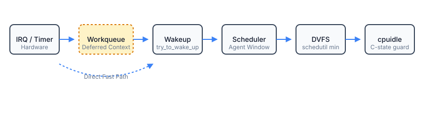
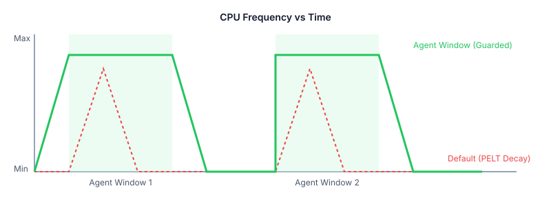

Agent workloads do not behave like traditional batch processing or high-throughput servers. They run in extremely tight, sequential control loops: wait → wake → compute → repeat. This pattern actively fights modern Linux power management and scheduling subsystems, leading to massive latency amplification.
This repository explores a cross-subsystem design targeting the entire control path:

We introduce an "agent active window" that enforces latency floors across four critical subsystems during tight control loops:
SCHED_FLAG_AGENT_LATENCY identifies agent tasks.schedutil min utilization during the active window.
This is an RFC experimental patch for systems research. To test the microbenchmark:
cd selftests && make
./agent_loop --agent-latency --steps 1000 --interval-us 500